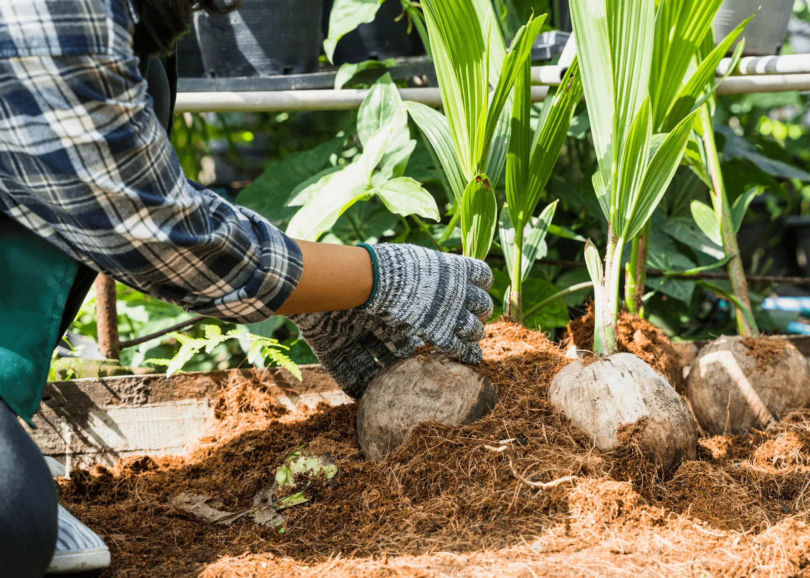
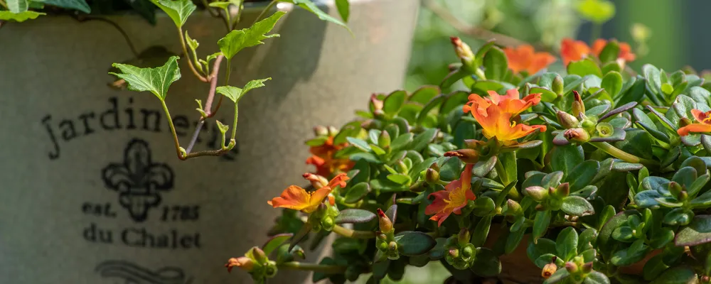
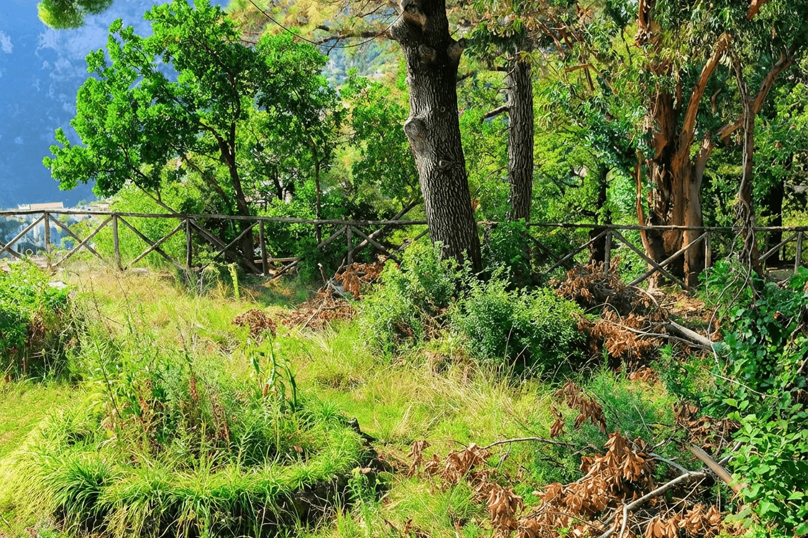
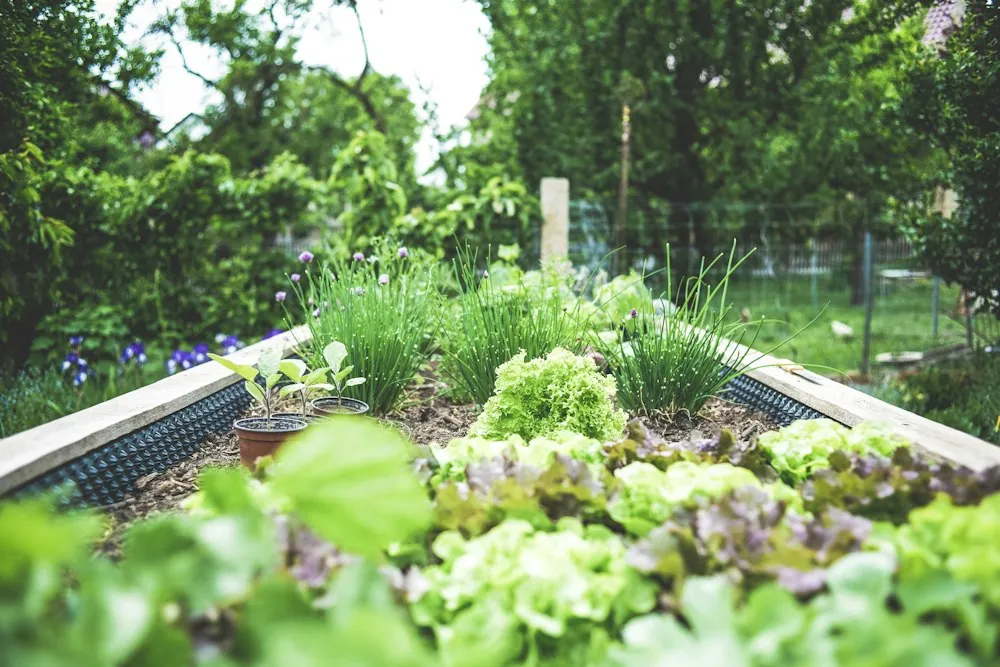
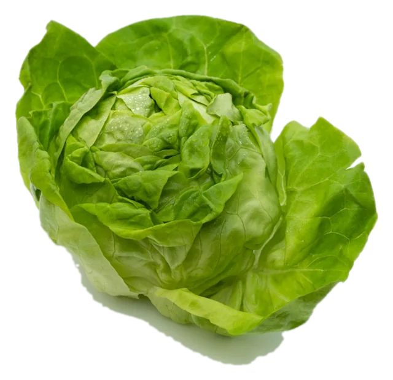
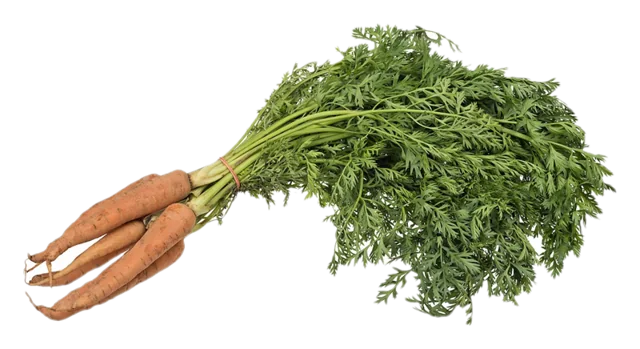
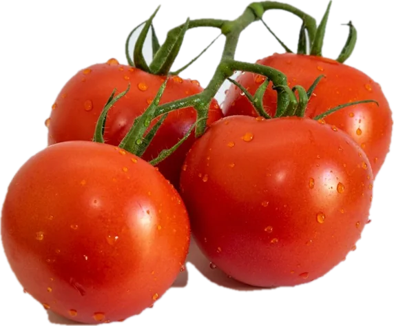
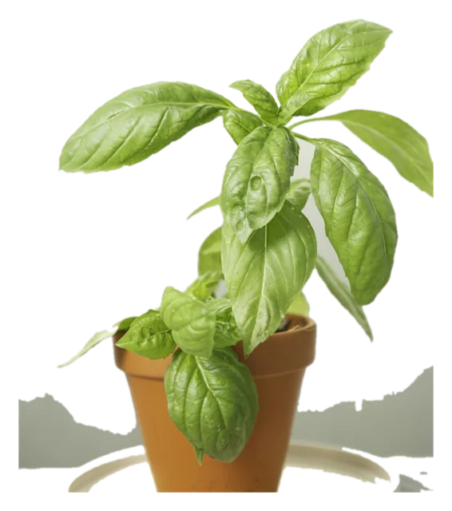

Cantero en tierra
- Ancho de 1 a 1,20 m
- Pasillos de 40 a 50 cm

Preparar y sembrar
Todo lo que pasa antes y durante la siembra: elegir el lugar, preparar el suelo, hacer un plan y poner cada semilla a producir.

Parte 1
El lugar, las herramientas, el suelo, el compost y el plan.
01 · El lugar
Antes de conseguir una sola semilla, mirá bien el espacio con el que contás. El lugar define cuánto vas a poder cultivar y cuánto trabajo te va a dar.
Seis horas o más de luz directa. Observá un día entero dónde da.
Una canilla cerca, porque vas a regar seguido.
Lejos del viento fuerte y del paso de las mascotas, o con media sombra o un cerco bajo.
¿Qué huerta te entra?
Ilustraciones de cantero y macetas adaptadas de INTA ProHuerta, La Huerta Orgánica.
Si dudás entre dos lugares, quedate con el que tengas más a la vista desde la casa. A la huerta que ves todos los días la cuidás.
Lo que cambia
Un patio con pasto alto o un balcón vacío alcanzan. Con un plan simple y la estación justa, en una temporada ya hay cosecha.


AntesDespuésImágenes de referencia, no son el mismo lugar.
02 · Herramientas
No hace falta llenar un galpón. Con pocas herramientas bien elegidas trabajás un cantero completo.
03 · El suelo
Un buen suelo de huerta está suelto, tiene materia orgánica y logra el equilibrio justo: retiene la humedad, pero también drena.
Manos a la obra
Sustrato para macetas y almácigos · partes iguales
No te obsesiones con la tierra perfecta. Mejora sola, año a año, si le devolvés materia orgánica.
04 · Compost
Millones de microorganismos convierten tus restos de cocina en tierra fértil, oscura y con olor a bosque.
Sí va
No va
La proporción
Verde es lo húmedo (restos de cocina); marrón, lo seco (hojas, cartón).
Manos a la obra
Tres formas de armar la abonera
El compost casi nunca falla, solo va más lento. Si huele feo, le falta material seco y aire.

Lechuga
Zanahoria
Tomate
Albahaca05 · El plan
La huerta que fracasa casi siempre es la que empezó demasiado grande.
Croquis de ejemplo
Canteros de 1 a 1,20 m de ancho, con aromáticas y flores intercaladas.
Ir al calendario de siembra →Es mejor un cantero bien cuidado que cinco abandonados. Sumá variedad antes que superficie.
Parte 2
De la semilla al cantero, en seis etapas.
01 · Semillas
Conviene priorizar buena calidad, variedades adaptadas a tu zona y, siempre que se pueda, semilla propia o de intercambio.
Guardar semilla propia cambia la relación con la huerta. Dejás de ser cliente y pasás a ser parte de la cadena.
Poder germinativo de referencia
| Duración | Especies |
|---|---|
| 4 a 5 años | Tomate, berenjena, pimiento, zapallo |
| 3 a 4 años | Lechuga, acelga, remolacha, pepino |
| 1 a 2 años | Zanahoria, perejil, cebolla, puerro, chaucha |
02 · Germinación
Necesita tres cosas: humedad constante, temperatura adecuada y, según la especie, algo de luz u oscuridad.
Antes
Prueba previaDiez semillas entre dos papeles de cocina húmedos. Contá cuántas brotan en siete a diez días.Día cero
Sembrar a la profundidad justaDos o tres veces el tamaño de la semilla. Las muy chicas, apenas cubiertas.Días uno a diez
Tapar y mantener húmedoUn vidrio o un plástico encima hasta que brote. Que la tierra no se seque ni un día.Al brotar
Destapar y dar luzApenas asoma, sacá la tapa para que el plantín no se estire.Casi todos los fracasos de germinación son por tierra que se secó un solo día.
03 · Cómo sembrar
Dos caminos para poner una semilla a producir. Cada especie prefiere uno.
Va directo a su lugar definitivo.
Especies
Nace protegida y va al cantero con tres o cuatro hojas.
Especies
Si estás empezando, arrancá con especies de siembra directa y plantines comprados. El almácigo propio llega solo, cuando ya le tomaste la mano al riego.
04 · Distancias
Aire, luz y raíz. Se anota entre plantas × entre líneas, en centímetros.
| Cultivo | Distancia (cm) |
|---|---|
| Lechuga | 25 × 25 |
| Acelga | 15 × 35 |
| Zanahoria | 5 × 20 |
| Remolacha | 10 × 20 |
| Cebolla | 10 × 20 |
| Tomate | 40 × 70 |
| Pimiento | 40 × 70 |
| Berenjena | 50 × 70 |
El raleo cuesta, pero es el gesto que más rinde. Sacar la mitad ahora es cosechar el doble después.
05 · Asociación de cultivos
Combinar especies por raíz, aroma o porte mejora el suelo, confunde a las plagas y aprovecha mejor el espacio.
Zanahoria + Cebolla
Se confunden mutuamente las plagas.
Tomate + Albahaca
Con caléndula en los bordes.
Maíz + Poroto + Zapallo
La milpa. El maíz da soporte, el poroto aporta nitrógeno y el zapallo da sombra.
Zanahoria + Lechuga
Raíz profunda y raíz superficial no compiten.
Nunca un cantero de una sola cosa. La huerta pareja y aburrida es la que más problemas da.
06 · Rotación
No repetir la misma familia en el mismo lugar: el suelo no se agota y no acumula plagas.
La rotación se nota recién al segundo año, pero es lo que hace que una huerta dure décadas sin cansarse.
Fuentes · INTA ProHuerta La Huerta Orgánica, Mi casa, mi huerta, Manual de la huerta agroecológica, Fabricación casera de herramientas e implementos para la huerta, Planificador de siembra ProHuerta 2020, Manual de cultivos para la huerta orgánica familiar, Calendario de siembra, Producción artesanal de semillas.